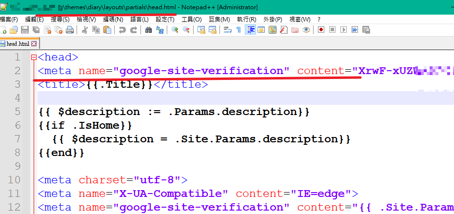
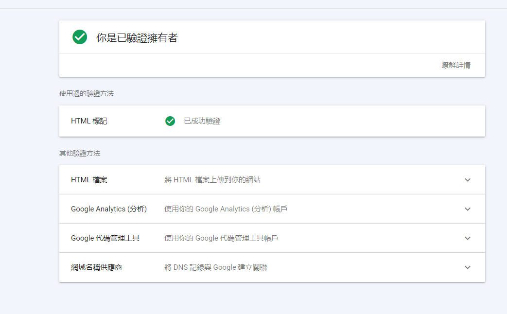

GoogleSearchConsole
關於網站驗證、sitemap與自訂搜尋
如何讓自己的blog被google搜尋到
- 首先你要跟google證明這個網站是你的，並且允許google的爬蟲機器人獲取你的網站資料，這樣別人才能在google上搜尋到你的網站
- 同時也能夠使用google自訂搜尋方便自己查找資料
關於網站驗證
- 你同意後它才能把觸手深入你的網站，你可以自訂搜尋這個網站的資料權限
- google提供多種方法，我是選html標記，放在套用的主題的之下，舉例:

- 如果你換了主題記得也要重改

Hugo建立sitemap索引
- 提供sitemap索引讓google機器人更好抓你的網站
- Hugo內鍵就有這個功能，修改config.toml，插入:
[sitemap]
changefreq = 'weekly'
filename = 'sitemap.xml'
priority = 0.5
自訂搜尋
大部分主題都有此功能，一樣修改config.toml即可:
googleSearchCode = "你的SearchCode"
上次修改於 2021-09-09